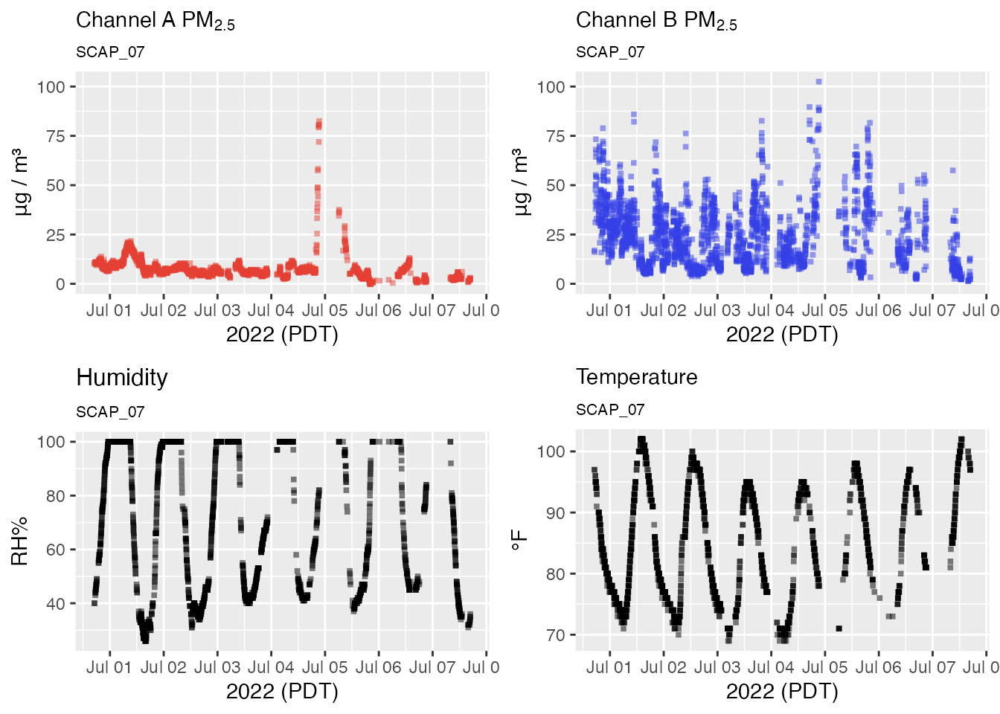
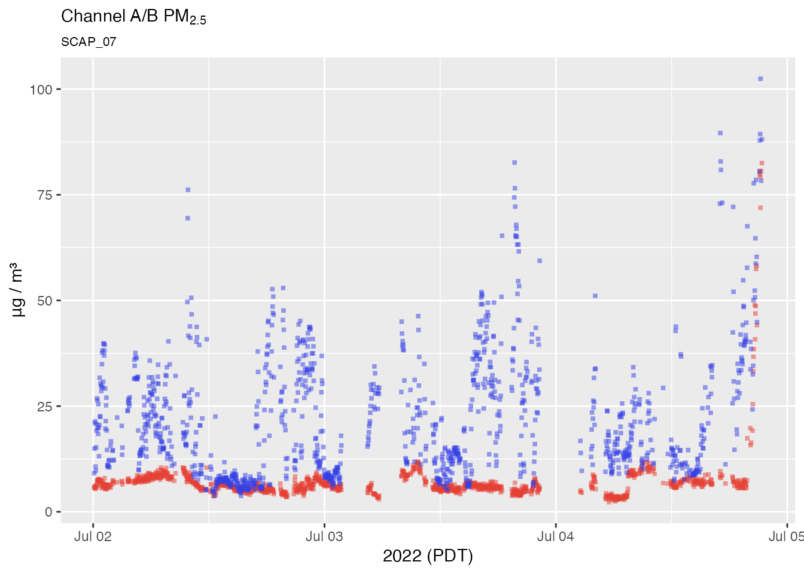
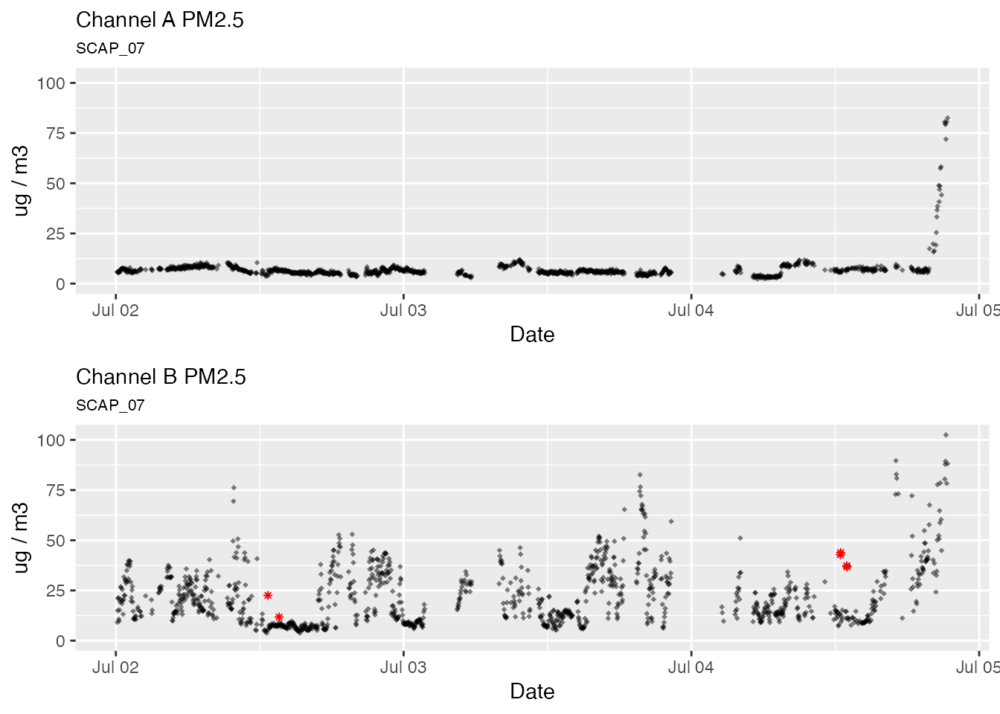

An Introduction to PurpleAir Time Series Data
Mazama Science
2019-04-11
Source:vignettes/pat_introduction.Rmd
pat_introduction.RmdTime series data provides a minute-by-minute database structure for transforming and analyzing PurpleAir sensor data. This vignette demonstrates an example analysis of an individual monitor located in Seattle, Washington over a two-month duration in which the Pacific Northwest experienced hazardous air-quality conditions caused by wildfires in British Columbia, Canada.
Disclaimer: It is highly recommended that you read vignettes/pas_introduction.Rmd before beginning this tutorial.
Loading PurpleAir Time Series data
PurpleAir sensor readings are uploaded to the cloud every 80 seconds or so where they are stored for download and display on the PurpleAir website. After every interval, the synoptic data is refreshed and the outdated synoptic data is then stored in a ThingSpeak database. In order to access the ThingSpeak channel API we must first load the synoptic database, which provides access tokens for each PurpleAir sensor – accessed by the monitor of interests label.
library(AirSensor)
library(MazamaCoreUtils)
pas <- pas_load()
pat <- pat_load(pas, "Seattle", startdate = 20180701, enddate = 20180901)Notice when passing our synoptic dataframe “pas” to pat_load, we also supply a unique identification label and date-interval. In this case, our monitor-of-interest (MOI) is a sensor named “Seattle” and our dates-of-interest (DOI) is 2018-07-01 to 2018-09-01.
Note: You must provide a label to pat_load in order to supply ThingSpeak with the necessary metadata to access the sensors database. A DOI on the other hand is optional; by default not providing pat_load with a start and end date will return exactly 1-week of time series data.
PurpleAir Time Series Data
Let’s begin by exploring the attributes of the dataframe returned by the pat_load function.
pat %>%
names()## [1] "meta" "data"pat contains two tables, meta and data.
By convention meta contains metadata of the selected PurpleAir sensor – this includes non-time series data such as location information, labels, etc. The time series data contains time-interval PurpleAir sensor readings of PM2.5, temperature, humidity, and other pertinent sensor data.
We’ll start by plotting PurpleAir’s raw sensor data. We can quickly display the time series data by using pat_multiplot and passing in our raw pat and desired plot type (“all” sensor data).
pat %>%
pat_multiplot(plottype = "all")
Exploring Time Series Data
From the overview plot above, we can gain a general picture of what local "Seattle" atmospheric conditions are like. To take a closer look at PM2.5, we can pass a more specific parameter into pat_multiplot.
pat %>%
pat_multiplot(plottype = "pm25")
Our pat dataframe spans two months. While this provides a great overview of PM2.5, it is unwieldy to analyze if we are only interested in anomolous air quality. We can use pat_filterDate to subset our pat dates. In this case, we’ll reduce our DOI to 01 August 2018 - 01 September 2018.
pat_august <-
pat %>%
pat_filterDate(startdate = 20180801, enddate = 20180901)
pat_august %>%
pat_multiplot(plottype = "pm25")
Our reduced dataframe pat_august may be a smaller time interval but intermintent sensor errors still likely exist. In order to identify and remove PM2.5 outliers we can use pat_outliers(). We’d also like to display the outliers to compare. Each outlier will be marked with a red “*“. We can assign the filtered dataframe a name for future use.
pat_august_filtered <-
pat_august %>%
pat_outliers(replace = TRUE, showPlot = TRUE)
Now that we have a filtered dataset we can begin looking into smaller datasets. 14 August 2018 appears to be the initial PM2.5 event. We can view a single day using pat_filterDate and pat_multiplot.
august_14 <-
pat_august %>%
pat_filterDate(startdate = 20180814, days = 1)
august_14 %>%
pat_multiplot(plottype = "all")
At this resolution we can see our PurpleAir Channel A & B data align closely. We can also confirm see that humidity and temperature have an inverse relationship!
This tutorials is in no way meant to be exhaustive – rather, it is to provide a brief overview of what time series data is, and how it can be used as insightful tool. PurpleAir time series datasets can be large and intimidating. But with a few simple functions we can view PurpleAir sensors with ease. See our other articles to explore deeper PurpleAir functionality.
Mazama Science